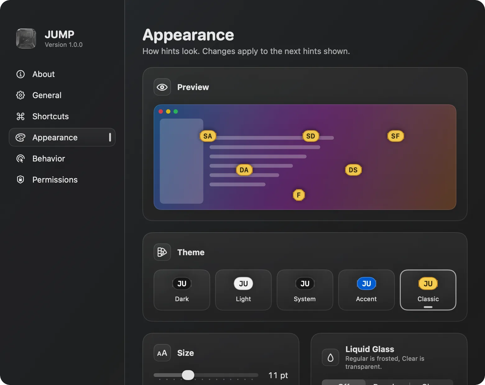

Click anything on your Mac without touching the mouse.
Press a shortcut and every button, link and field in the window gets a short label. Type the label to click it.
Download for MacVersion 1.0.0 for macOS 26 and later. Free and open source.
Three modes, one shortcut each.
Hints
Labels every clickable element of the focused window. Type a label to click it. Hold ⇧ to right-click, ⌘ to double-click or ⌥ to only move the pointer.
Scroll
Scrolls the window with h j k l, half a page with d u, to either end with gg G. Tab moves to the next scrollable area.
Text search
Finds any text visible in the window, ignoring case and accents. Tab moves between matches and Return puts the cursor there.
Made to stay out of your way.
Gone when you move on
Switch apps with the mouse, ⌘-Tab or a window manager like AeroSpace and the labels disappear on their own.
Reads text you can't select
For terminals, PDFs and images, text search can recognize what is on screen. It's off until you turn it on, and nothing leaves your Mac.
Yours to adjust
Change the shortcuts, the letters labels use, five label themes, sizes from 7 to 20 pt, Liquid Glass and scroll speed.
Open source
GPL-3.0, built on ideas and code from Vimac. Read the code, report issues or send changes on GitHub.
Set it up the way you work.

Install in a minute.
Download JUMP.dmg and drag JUMP to Applications.
Open JUMP. The first time, macOS asks you to confirm it.
JUMP isn't notarized yet. Go to System Settings, Privacy & Security, and choose Open Anyway.
Allow JUMP in Accessibility when it asks.
That's how JUMP finds and clicks elements in other apps.
Press ⌘⇧Space in any window.